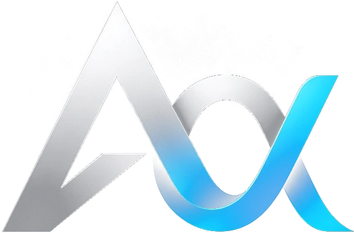

Alpha
Alpha is the pack that is actually out and running. Firearms, rail, vehicles, building, disasters and other dimensions — 13 modules that move together on one version.
It ships
Currently 4.3.8 on Minecraft 26.2, after 94 releases. Every change is published, every time.
Measured before it ships
Nothing is called fixed until it has been measured. Claims that cannot be measured do not go on the page, and a red gate does not ship.
Installs with Corvus
The Corvus launcher installs all 13 jars together and keeps them current. No swapping files by hand.